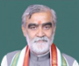
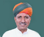
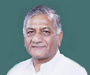

| 1 |
Shri Rao Inderjit Singh |
 |
Ministry of Corporate Affairs |
| 2 |
Dr. Jitendra Singh |
 |
- Prime Minister's Office
- Ministry of Personnel, Public Grievances and Pensions
- Department of Atomic Energy
- Department of Space
|
| 3 |
Shri Shripad Yesso Naik |
|
Ministry of Tourism |
| 4 |
Shri Faggansingh Kulaste |
|
- Ministry of Steel
- Ministry of Rural Development
|
| 5 |
Shri Prahalad Singh Patel |
|
- Ministry of Jal Shakti
- Ministry of Food Processing Industries
|
| 6 |
Shri Ashwini Kumar Choubey |
 |
- Ministry of Consumer Affairs, Food and Public Distribution
- Ministry of Environment, Forest and Climate Change
|
| 7 |
Shri Arjun Ram Meghwal |
 |
- Ministry of Parliamentary Affairs
- Ministry of Culture
|
| 8 |
General (Retd.) V.K. Singh |
 |
- Ministry of Road Transport and Highways
- Ministry of Civil Aviation
|
| 9 |
Shri Krishan Pal |
|
- Ministry of Power
- Ministry of Heavy Industries
|
| 10 |
Shri Danve Raosaheb Dadarao |
|
- Ministry of Railways
- Ministry of Coal
- Ministry of Mines
|
| 11 |
Shri Ramdas Athawale |
|
Ministry of Social Justice and Empowerment |
| 12 |
Sadhvi Niranjan Jyoti |
 |
- Ministry of Consumer Affairs, Food and Public Distribution
- Ministry of Rural Development
|
| 13 |
Shri Sanjeev Kumar Balyan |
 |
- Ministry of Fisheries, Animal Husbandry and Dairying
|
| 14 |
Shri Nityanand Rai |
 |
- Ministry of Home Affairs
|
| 15 |
Shri Pankaj Chaudhary |
 |
- Ministry of Finance
|
| 16 |
Smt. Anupriya Singh Patel |
 |
- Ministry of Commerce and Industry
|
| 17 |
Prof. S. P. Singh Baghel |
 |
- Ministry of Law and Justice
|
| 18 |
Shri Rajeev Chandrasekhar |
 |
- Ministry of Skill Development and Entrepreneurship
- Ministry of Electronics and Information Technology
|
| 19 |
Sushri Shobha Karandlaje |
 |
- Ministry of Agriculture & Farmers Welfare
|
| 20 |
Shri Bhanu Pratap Singh Verma |
 |
- Ministry of Micro, Small and Medium Enterprises
|
| 21 |
Smt. Darshana Vikram Jardosh |
 |
- Ministry of Textiles
- Ministry of Railways
|
| 22 |
Shri V. Muraleedharan |
|
- Ministry of External Affairs
- Ministry of Parliamentary Affairs
|
| 23 |
Smt. Meenakashi Lekhi |
|
- Ministry of External Affairs
- Ministry of Cultur
|
| 24 |
Shri Som Parkash |
|
- Ministry of Commerce and Industry
|
| 25 |
Smt. Renuka Singh Saruta |
|
- Ministry of Tribal Affairs
|
| 26 |
Shri Rameswar Teli |
|
- Ministry of Petroleum and Natural Gas
- Ministry of Labour and Employment
|
| 27 |
Shri Kailash Choudhary |
|
- Ministry of Agriculture & Farmers Welfare
|
| 28 |
Smt. Annpurna Devi |
|
- Ministry of Education
|
| 29 |
Shri A. Narayanaswamy |
|
- Ministry of Social Justice and Empowerment
|
| 30 |
Shri Kaushal Kishore |
|
- Ministry of Housing and Urban Affairs
|
| 31 |
Shri Ajay Bhatt |
 |
- Ministry of Defence
- Ministry of Tourism
|
| 32 |
Shri B. L. Verma |
|
- Ministry of Development of North Eastern Region
- Ministry of Cooperation
|
| 33 |
Shri Ajay Kumar |
|
- Ministry of Home Affairs
|
| 34 |
Shri Devusinh Chauhan |
|
- Ministry of Communications
|
| 35 |
Shri Bhagwanth Khuba |
|
- Ministry of New and Renewable Energy
- Ministry of Chemicals and Fertilizers
|
| 36 |
Shri Kapil Moreshwar Patil |
|
- Ministry of Panchayati Raj
|
| 37 |
Sushri Pratima Bhoumik |
|
- Ministry of Social Justice and Empowerment
|
| 38 |
Dr. Subhas Sarkar |
|
- Ministry of Education
|
| 39 |
Dr. Bhagwat Kishanrao Karad |
|
- Ministry of Finance
|
| 40 |
Dr. Rajkumar Ranjan Singh |
 |
- Ministry of External Affairs
- Ministry of Education
|
| 41 |
Dr. Bharati Pravin Pawar |
 |
- Ministry of Health and Family Welfare
|
| 42 |
Shri Bishweswar Tudu |
 |
- Ministry of Tribal Affairs
- Ministry of Jal Shakti
|
| 43 |
Shri Shantanu Thakur |
 |
|
| 44 |
Dr. Munjapara Mahendrabhai |
 |
- Ministry of Women and Child Development
- Ministry of Ayurveda, Yoga and Naturopathy, Unani, Siddha and Homoeopathy (AYUSH)
|
| 45 |
Shri John Barla |
 |
- Ministry of Minority Affairs
|
| 46 |
Dr. L. Murugan |
 |
- Ministry of Fisheries, Animal Husbandry and Dairying
- Ministry of Information and Broadcasting
|
| 47 |
Shri Nisith Pramanik |
 |
- Ministry of Home Affairs
- Ministry of Youth Affairs and Sports
|